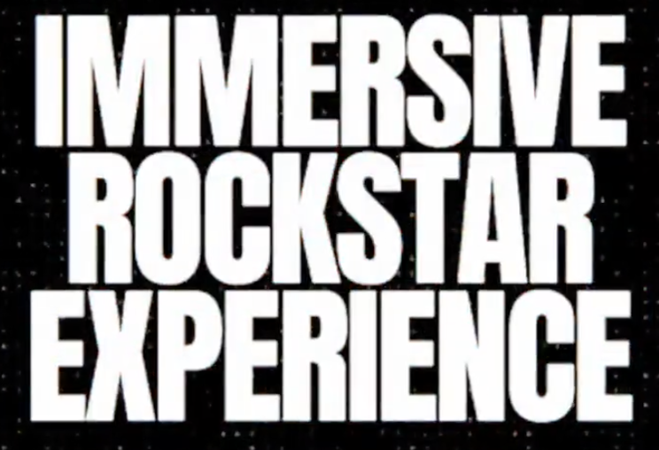

| Package | Description | Price |
|---|---|---|
| Family Fun Package |
This package includes admission for 2 adults and 2 children. Enjoy access to all live performances, food stalls, and kids' activities. Plus, receive two meal vouchers and four drink tokens. It's a perfect option for families looking to create lasting memories together! | £120 |
Rockstar Experience  |
Get an exclusive VIP experience with this package! It includes admission for 1 adult with backstage access to meet and greet bands, premium seating at the main stage, and complimentary snacks and drinks throughout the festival. A souvenir t-shirt and a limited edition poster are also included. | £250 |
Community Celebration Pass |
Celebrate the festival's rich history! This package offers admission for 4 adults along with access to exclusive workshops and historical exhibits showcasing 100 years of Tuff Festival. Enjoy food and drink discounts at all stalls, plus a commemorative booklet outlining the festival's history. | £350 |